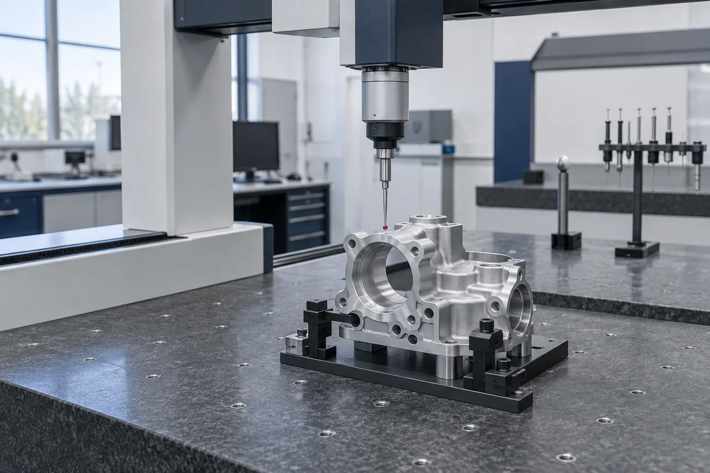
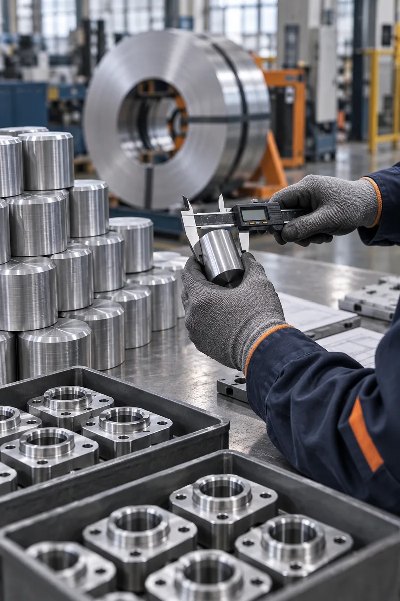

Planeación avanzada de calidad
Organiza las actividades de calidad del producto desde las primeras etapas del proceso.

CALIDAD AVANZADA DEL PRODUCTO
Planeación, análisis y seguimiento para cuidar el producto a lo largo del proceso.
Explorar una demoCALIDAD A LO LARGO DEL PROCESO
Conecta los criterios del producto con la inspección y el seguimiento de hallazgos. Una visión compartida facilita revisar lo ocurrido y preparar la siguiente acción.
DEL CRITERIO A LA EVIDENCIA
Control de calidadCaracterística · tolerancia · método · frecuencia
Medir, documentar y comparar con el criterio.
Conservar el resultado y su trazabilidad.
Identificar producto afectado, causa y acción responsable.
Revisar la evidencia de cierre y actualizar el control cuando corresponda.
Características, métodos y responsables dan contexto a la evaluación del producto.
Vincula registros y evidencias para facilitar la investigación de desviaciones.
Revisa acciones, responsables y evidencias de cierre según el alcance definido para tu proceso.
DEL DISEÑO A LA ENTREGA
Un sistema APQS reúne herramientas para planear, evaluar y gestionar la calidad durante el ciclo del producto.
El trabajo comienza antes de la inspección final. La planeación avanzada, el análisis de fallas, las auditorías y la gestión de proveedores permiten ordenar actividades y revisar el proceso con mayor contexto.
MÓDULOS DE CALIDAD AVANZADA
Organiza las actividades de calidad del producto desde las primeras etapas del proceso.
Estructura la revisión de fallas potenciales, sus causas y sus efectos para orientar acciones.
Acompaña la evaluación de procesos y la revisión de los criterios de calidad definidos.
Integra el seguimiento de la calidad de los suministros dentro de la gestión del producto.
PERSPECTIVA DE MEJORA
La tecnología conecta las decisiones con los objetivos de tu operación.
Cifras publicadas en el sitio de referencia de Antal M. Su alcance depende del proceso, los datos y la implementación; no constituyen una garantía de resultados.

ANTES DE IMPLEMENTAR
Para evaluar un sistema de calidad avanzada, revisamos contigo los procesos y la base de información disponibles.
Etapas y actividades donde se planea, verifica y documenta la calidad.
Requisitos, registros y responsabilidades que necesita organizar el sistema.
Información que se revisa y comparte para dar seguimiento a la calidad.
DE LA COMPLEJIDAD A LA CLARIDAD